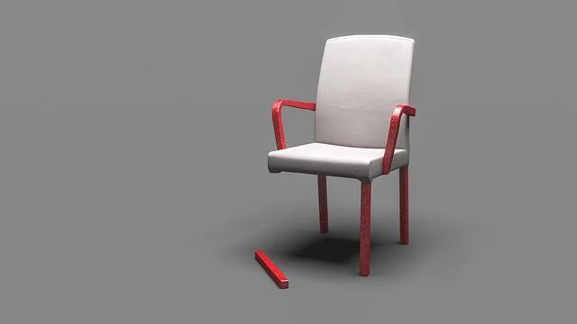
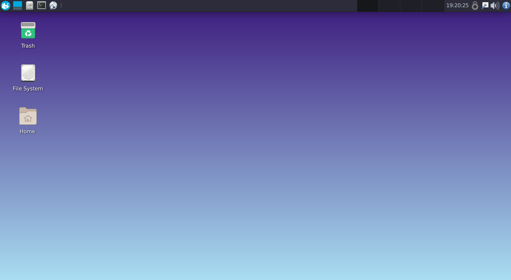
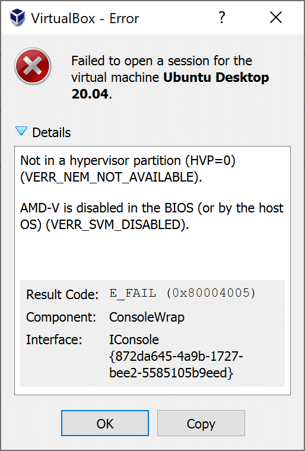
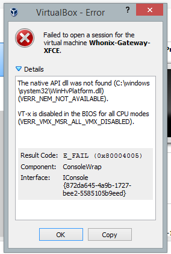
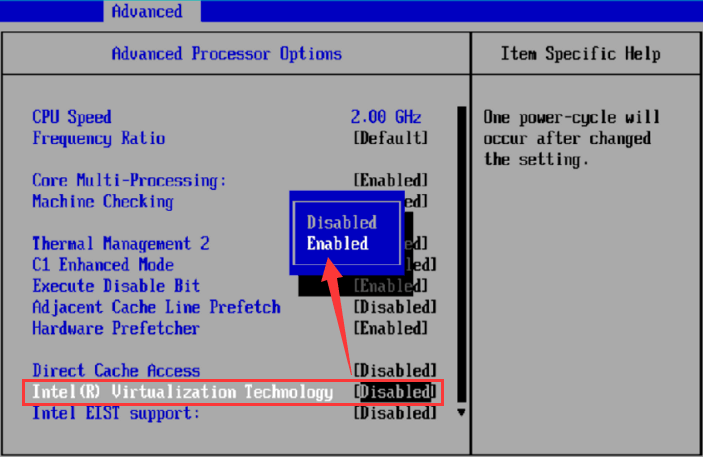
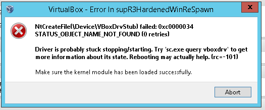
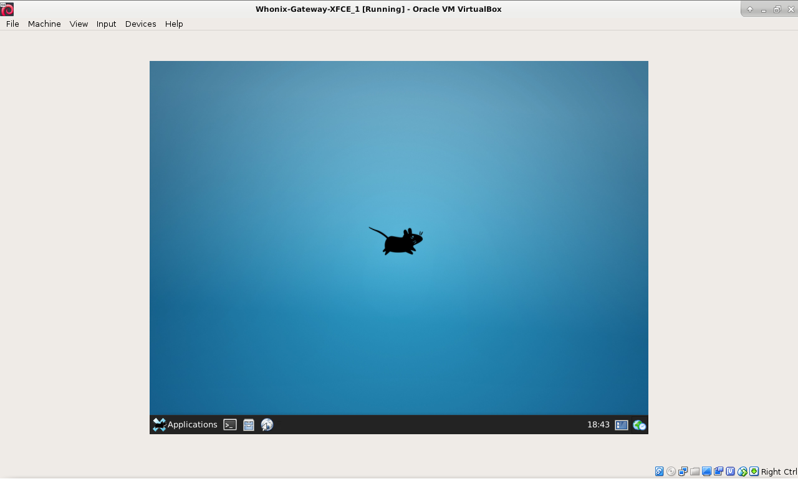
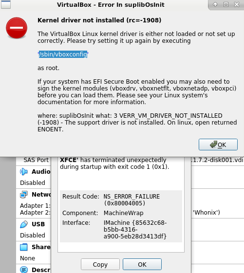
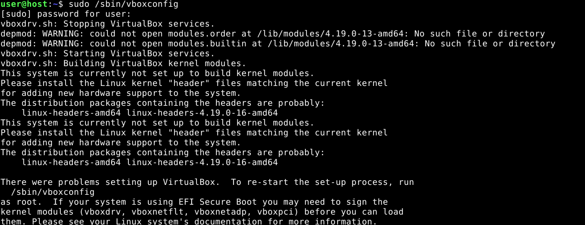

VirtualBox/Other VersionsDocumentationVirtualBox/Green Turtle IssuePrevious page: VirtualBox/Other VersionsIndex page: DocumentationNext page: VirtualBox/Green Turtle IssueKicksecure in VirtualBox - Troubleshooting - Does not Start? Slow? Other Issues?

There are many issues which might prevent a normal operation of the VirtualBox host virtualization software. This wiki page documents common issues and potential solutions.
Topics on this page are sorted roughly in order of issue prevalence. More common issues are on top.
General VirtualBox Troubleshooting Steps
 In many situations, the following steps will fix VirtualBox issues.
In many situations, the following steps will fix VirtualBox issues.
1 General Troubleshooting for issues such as VM freezing.
2
Random VM reboots? Try to disable panic-on-oops.
3 In case of connectivity issues, see Connectivity Troubleshooting.
4
 Use the stable version of Kicksecure for VirtualBox
Use the stable version of Kicksecure for VirtualBox
18.2.1.9.
5

 Use the recommended VirtualBox host software
version, which is currently:
Use the recommended VirtualBox host software
version, which is currently: latest
6

7

 Do not use VirtualBox guest additions from CD.
[1]
Do not use VirtualBox guest additions from CD.
[1]
8
 Linux users only: Host kernel version: use the recommended
host Linux kernel version. It should be the same version that Debian
Linux users only: Host kernel version: use the recommended
host Linux kernel version. It should be the same version that Debian
trixie is using (linux-image-amd64).
Otherwise many kernel
issues are likely to occur.
9
 Linux users only: Host operating system: use a recommended
Linux distribution -- Debian
Linux users only: Host operating system: use a recommended
Linux distribution -- Debian
trixie or Kicksecure 18 -- as the host
operating system.
10
 Linux users only: Linux user groups: Add your current user
to group
Linux users only: Linux user groups: Add your current user
to group vboxusers. [2]
sudo adduser $(whoami) vboxusers
11
 Windows users only: Host operating system: Consider
running Kicksecure from a Linux computer rather than a Windows computer.
[3]
Windows users only: Host operating system: Consider
running Kicksecure from a Linux computer rather than a Windows computer.
[3]
12
Virtualizer Conflicts: Do you have virtualizers other than
VirtualBox installed at the same time such as
VMware, Hyper-V or
 KVM? If you never heard of these product names or do not know what that
means then this is not an issue. But if you have multiple
virtualizers/hypervisors installed, only one can run at once (in this
section only VirtualBox), see the footnote for further information.
[4]
KVM? If you never heard of these product names or do not know what that
means then this is not an issue. But if you have multiple
virtualizers/hypervisors installed, only one can run at once (in this
section only VirtualBox), see the footnote for further information.
[4]
13 Low RAM Issues: Perhaps a Low RAM issue? Free up Additional Memory Resources and try Kicksecure CLI RAM Saving Mode as per Advice for Systems with Low RAM.
14 3D Acceleration Issues: If you enabled Hardware-accelerated Graphics, try turning this off, as VirtualBox 3D acceleration has been reported to cause issues.
15 Hardware Issues: Exclude basic hardware issues.
16
RAM Hardware Issues: Run memtestx86+.
18 VirtualBox Generic Bug Reproduction
19
 Windows
Windows 10 / 11 users only: Hash Sum
mismatch: Disable Core
Isolation.
20
 Windows
Windows 10 / 11 users only: Virtual Machine
only starts after several attempts -
rcpu_preempt self-detected stall on CPU / Green
Turtle
Linux Host Kernel versus Tor Browser and other Crashes
This issue happens after a Linux host kernel upgrade. Common symptoms of this issue are:
- APT showing
hashsum mismatch. - other kernel issues
- Tor Browser crashes.
ERROR: Tor Browser ended with non-zero (error) exit code!
Tor Browser was started with:
/home/user/.tb/tor-browser/Browser/start-tor-browser --verbose --allow-remote .
Tor Browser exited with code: 139This is fixed since VirtualBox version 6.1.36 and above.
For installation instructions, see recommended
VirtualBox version.
Forum discussion: https://forums.whonix.org/t/tor-browser-crashing-in-whonix-virtualbox-since-upgrade-to-host-linux-kernel-version-5-10-0-15/13767
Failed to open a session for the virtual machine
If you see the following error message:
Failed to open a session for the virtual machine Kicksecure-LXQt
Click details. If Result Code:
NS_ERROR_FAILURE (0x80004005) is shown, then this chapter
applies.
Should be fixed in VirtualBox version 6.1.22 and
above.
This occurs with all Kicksecure VirtualBox versions up to version
15.0.1.7.2 when using VirtualBox version
6.1.20. VirtualBox version 6.1.20
solution:
VirtualBox->Settings->Storage->Type:AHCI->OK[5]- Other settings remain unchanged.
This setting is the default in Kicksecure version
15.0.1.7.3 and above.
Note this setting might cause High Disk Usage Causing Filesystem Corruption on some (slower) hardware configurations due to a VirtualBox host software bug, High I/O causing filesystem corruption. This is speculation and unavoidable because there is no other solution at present. The High Disk Usage Causing Filesystem Corruption chapter has approaches which might fix this issue if it manifests.
To avoid issues like
Failed to open a session for the virtual machine in the
future, use the recommended version of the VirtualBox host software
and Stay Tuned.
Forum discussion: Kicksecure VirtualBox - failed to start - NS_ERROR_FAILURE (0x80004005) - The VM session was aborted.
VirtualBox upstream bug report: VM Machine wont to start after upgrade to 6.1.20
VT-x
VERR_SSM_FIELD_NOT_CONSECUTIVE
If the "Failed to load
unit 'PATM' (VERR_SSM_FIELD_NOT_CONSECUTIVE)." error
appears, VT-x must be enabled in BIOS settings, see instructions.
VT-x is disabled in BIOS
 
If the following error message appears.
Failed to open a session for the virtual machine Kicksecure-LXQt.
VT-x is disabled in the BIOS. (VERR_VMX_MSR_VMXON_DISABLED).
Or.
AMD-V is disabled in the BIOS (or by the host OS). (VERR_SVM_DISABLED).
Then enable VT-x in
BIOS settings.
VT-x / SVM Errors

These errors arise when the host's hardware virtualization extension is not available. The reasons are either/and/or:
- A) Another hypervisor is running on the system.
- B) An anti-virus suite is blocking virtualization.
- C) Virtualization support is not present or not enabled in the machine BIOS.
Solution:
1. Enter the BIOS/UEFI setup menu of your machine. For general guidance, see: How to Change BIOS Settings.
2. Enable hardware virtualization. This may be listed under different names depending on your system:
VT-xAMD-VVirtualizationSVM modeMIT(sometimes underAdvanced Coresettings)
3. Save changes.
4. Reboot.
5. Done.
Updating/Upgrading while VMs are Running
Error In supR3HardenedWinReSpawn

Do not update whilst the VMs are running, otherwise VirtualBox must be reinstalled.
VMMR0InitVM: Revision mismatch
debian kernel: VMMR0InitVM: Revision mismatch, r3=132055 r0=130347This happens when upgrading VirtualBox on the host while existing VMs are still running. The solution is to shut down and restart all VMs.
Disk Space
E_INVALIDARG (0x80070057)
This might relate to a low disk space issue -- unspecific to Kicksecure -- research the issue further with search engines.
A user reported:
During Import, on Application Settings pop up. Setting called "Additional Options: __ Import hard drives as VDI". Unselecting this got me past this error.
This might be the case because if no conversion to VDI is required then less disk space might be sufficient.
Non-functional Shared Clipboard and Drag and Drop
If the shared clipboard and drag'n'drop to/from host is non-functional, this can relate to the version of guest additions installed in Kicksecure and/or the version of VirtualBox running on the host. [6]
- Apply General VirtualBox Troubleshooting Steps.
VirtualBox->Settings->General->Advanced tab->'Check' shared clipboard and drag and drop
It might still not work, see: VirtualBox Guest Additions Bugs Reporting.
Screen Issues
Screen Resolution Bug

If the display presents like the image on the right-hand side, then you are affected by a screen resolution bug which only occurs in VirtualBox.
To correct the resolution, first apply the General VirtualBox Troubleshooting Steps.
If the issue still persists, try one of the following workarounds to correct the resolution.
VirtualBox Virtual Screen Menu Workaround
- Power off the VM.
- Restart the VM.
- Maximize the VM window after start of the VM as soon as possible.
VirtualBox VM Window->View->Virtual Screen 1->Choose any, resize to another resolutionVirtualBox VM Window->View->Auto-resize Guest Display
Desktop Resolution Settings Workaround
If the method above did not work, another option is the following. Inside the virtual machine:
LXQt Start Menu -> Preferences ->
Displays -> Size ->
Choose a higher resolution -> Apply
VirtualBox VMSVGA Graphics Controller Setting Workaround
If it still does not work, a final option is the following.
Inside the virtual machine [7]:
On the host:
- Power off the VM.
VirtualBox->click a VM->Settings->Display->Graphics Controller->VMSVGA->OK(This is already the case in newer Kicksecure versions.)VirtualBox->click a VM->Settings->Display->Graphics Controller->increase slider for Video Memory to 128->OK(This is already the case in newer Kicksecure versions.)- Restart the VM.
- Maximize the VM window after start of the VM as soon as possible.
- If necessary, try again one of above workarounds.
VirtualBox Guest Additions Bugs Reporting
Occasionally screen resolution problems might still persist, see: VirtualBox Guest Additions Bugs Reporting.
Black Screen
If a black screen appears, try the following possible solutions.
- Install the recommended version of the VirtualBox host software.
- Apply the General VirtualBox Troubleshooting Steps.
- Reboot.
- If the issue persists, try the following workarounds.
If this solution or any of the workarounds worked for you, please report this in Kicksecure forums.
Workaround 1: Try Other VirtualBox Virtual Graphics Controller Settings
- Power off the VM.
VirtualBox->click a VM->Settings->Display->Graphics Controller->VMSVGA->OK(Or try other settings there.) [8]VirtualBox->click a VM->Settings->Display->Graphics Controller->increase slider for Video Memory to 128->OK(This is already the default in recent releases of Kicksecure.)- Restart the VM.
Workaround 2: Boot Once Without Virtual Graphics Adapter
This workaround has been reported as functional on a Windows 10 host with both Intel and nVidia GPU capabilities. It is okay to try this workaround on any host operating system.
- Power off the VM.
VirtualBox->click a VM->Settings->Display->Graphics Controller->None->OK- Start the VM. Wait 2-3 minutes. (Since the display is disabled, you will see nothing happening)
- Click the VirtualBox pane's
[X]button. VirtualBox will offer a dialog with 3 options. IfSend Shutdown signalis greyed out, cancel the dialog and try this step again every 10-20 seconds. - Send Shutdown signal. If it does not shut down immediately, wait a short time and try again.
- Once the VM shuts down, restore the Graphics Controller to
VMSVGA. - Restart the VM.
If this workaround succeeds, the screen will again be black for
2-3 minutes, but then chkdsk will run and the VM should
start normally.
Workaround 3: nomodeset Kernel Parameter
Try to boot with the nomodeset kernel
parameter. If that works, please post a forum report and then make the
change permanent. [9]
Workaround 4: Virtual Console
If it is possible to switch to a virtual console, this can help with debugging.
Slow Video Playback
Possible solutions:
- Untested: Try downloading a video using yt-dlp (.onion) and then play the video in VLC.
- Tested: Consider Tuning, specifically enable hardware-accelerated graphics. Note that this configuration worsens security.
- Untested: Consider disabling CPU mitigations. This configuration also worsens security.
It is unknown whether enabling VirtualBox hardware-accelerated graphics (3D Acceleration) or disabling CPU mitigations is worse for security. Contributors are asked to research this issue (Self Support First Policy) and report what is found in a dedicated forum thread.
Miscellaneous
Host Crash
See the Aborted Status instructions below. The same instructions are applicable.
Aborted Status
If the virtual machine ever shows an aborted status,
perform these steps:
- Try to Assign Less Virtual CPUs; this may help to avoid the issue.
- Check for Low RAM issues.
- Apply General VirtualBox Troubleshooting Steps.
- Consider reporting a bug against upstream VirtualBox -- VirtualBox bugtracker / VirtualBox forums. VirtualBox developers require logs to identify the problem. [10]
Kicksecure provides VM images that operate inside the VM. Whatever occurs inside a VM should never lead to a crash (status aborted) of the host virtualization software, VirtualBox.
Recommended steps:
- To capture the VirtualBox log:
VirtualBox->right click a VM->Show Log...->Log->Save->OK - Zip the log.
- Report to VirtualBox support.
- Share the VirtualBox support request link in Kicksecure forums.
Guru Meditation
Kicksecure provides VM images that operate inside the VM. Whatever occurs inside a VM should never lead to a Guru Meditation of the host virtualization software, VirtualBox.
Posting a screenshot of the Guru Meditation screen is probably not required since these all look very similar. [11]
VirtualBox Guru Meditation
A critical error has occurred while running the virtual machine and the machine execution has been stopped.
For help, please see the Community section on https://www.virtualbox.org or your support contract. Please provide the contents of the log file VBox.log and the image file VBox.png, which you can find in the /home/sk/VirtualBox VMs/Ubuntu 20.04 Server/Logs directory, as well as a description of what you were doing when this error happened. Note that you can also access the above files by selecting Show Log from the Machine menu of the main VirtualBox window.
Press OK if you want to power off the machine or press Ignore if you want to leave it as is for debugging. Please note that debugging requires special knowledge and tools, so it is recommended to press OK now.
This example text does not contain any technical details which could help to fix the issue, since VirtualBox Guru Meditation can occur for many reasons.
Recommended steps to resolve VirtualBox Guru Meditation issues:
1. Apply General VirtualBox Troubleshooting Steps.
These often help resolving such issues.
2. Capture the VirtualBox log
Without log contents, developers will probably be unable to help.
VirtualBox -> right click a VM ->
Show Log... -> Log -> Save ->
OK
3. Consider inspecting the log yourself.
Use search engines to try and locate any similar or identical error
messages. Usually the issue will already have been reported, and a
solution might be documented in the same place. It is recommended to
search the official VirtualBox website because most VirtualBox
developers and experts will utilize this resource. The following search
term will limit search results to the VirtualBox website (this is a
feature which most search engines support):
site:virtualbox.org error message here.
[12]
4. Consider reporting a bug against upstream VirtualBox.
- Zip the log.
- Post the log at VirtualBox bugtracker or VirtualBox forums.
- VirtualBox developers require logs to investigate the problem. [10]
5. Share the VirtualBox support request link in Kicksecure forums.
6. Done.
Hopefully help can be provided.
NS_ERROR_FAILURE
NS_ERROR_FAILURE (0x80004005)Quote VirtualBox forum moderator
NS_ERROR_FAILURE (0x80004005) is a general failure message when loading a VM. Subsequent lines in the error dialog will give the exact cause of the error. You do NOT have the same error just because you see the generic leader. If you don't provide a log or the supplemental error description then we can't help you.
Sometimes there is a more specific error message included such as.
VirtualBox can't operate in VMX root mode. Please disable the KVM kernel extension, recompile your kernel and reboot (VERR_VMX_IN_VMX_ROOT_MODE).
In that case,
While this is not the same error as Guru Meditation, all the same information and advice from that chapter applies. Therefore please follow chapter Guru Meditation.
Kernel driver not installed


Kernel driver not installed (rc=-1908)
If this occurs on Linux based host operating systems, then it is likely the Linux headers package matching the currently running Linux image package is not installed. To attempt to fix the issue:
1. Go to the Recommended VirtualBox Version wiki page.
2. Press the expand button for your operating system.
If on Linux, press the Expand button on that wiki page.
Once expanded, the recommended instructions will explain how to install VirtualBox for select Linux distributions as well as generic recommendations for other Linux distributions.
4. Apply the installation instructions from that wiki page.
5. Issue resolved?
This issue is unspecific to Kicksecure. Any VM from any vendor and/or self-created VM will fail to start, not just Kicksecure VM. This is because it is a host operating system and VirtualBox issue. If the instructions above did not fix the issue, then try accessing further support resources including the Testing with a Debian VM chapter.
6. Support requests.
For support requests, please provide the following debug output. Is
package linux-headers-amd64 installed? To check on Debian
based operating systems, run:
dpkg -l | grep linux-headers-amd64Is package linux-image-amd64 installed? To check,
run:
dpkg -l | grep linux-image-amd64Windows only - Virtual Machine only starts after several attempts - rcpu_preempt self-detected stall on CPU
rcpu_preempt self-detected stall on CPUSee below.
Windows only - VirtualBox Green Turtle
Symptoms:
- The VirtualBox host software shows a green turtle indicator (always visible); and/or
- terminal message:
rcpu_preempt self-detected stall on CPU
In this case, see VirtualBox Green Turtle Issue.
Assign Less Virtual CPUs
Try assigning less virtual CPUs. [13]
In Kicksecure 15.0.1.3.4 and above 3
virtual CPUs is now the default setting; 4 were previously
used. As a result, this workaround should no longer be required for most
users.
- Power off the VM.
VirtualBox->click a VM->Settings->System->Processor->Reduce to 3->OK
INCONSISTENCY BETWEEN GRAIN TABLE AND BACKUP GRAIN TABLE
If this error appears, sometimes it helps to:
- Try and convert the
vmdktovdi. - Remove the old
vmdkfrom the VM. - Attach the new
vdi.
High Disk Usage Causing Filesystem Corruption
This is a VirtualBox host software bug, High I/O causing filesystem corruption.
The following settings cannot fix already existing filesystem corruption inside the virtual harddrive. However, these settings might prevent future filesystem corruption. Therefore the best time to experiment with these settings is before starting a virtual machine for the first time or at least before issues appear.
Enabling Host I/O Cache might help as it was reported by a
user on the VirtualBox issue tracker.
VirtualBox -> Settings ->
Storage -> Name: SATA ->
Type: AHCI -> enable
Use Host I/O Cache -> OK
Experimenting with other virtual machine hardware settings might also help.
VirtualBox -> Settings ->
Storage -> Name: -> experiment with other
settings -> OK
Maybe Type: virtio-scsi could help.
Other settings that might help:
- https://www.virtualbox.org/manual/ch12.html#ts_config-periodic-flush
- https://www.virtualbox.org/manual/ch12.html#ts_ide-sata-flush
- Quote https://www.virtualbox.org/ticket/10031#comment:2
Try to tune host os page flusher behavior to avoid accumulating of significant amount of dirty pages in host file system buffers. For example, set vm.dirty_background_ratio to 5 or below (this is still large size - about 1Gb) or set vm.dirty_background_bytes to something smaller like 20971520 to make page flusher more active. Note that this may make host file system cache less effective, but it prevents write operation stuck during buffer flush.
References:
- VirtualBox host software bug, High I/O causing filesystem corruption
- Old issue tracker discussion: VirtualBox AHCI
- VirtualBox manual: Hard Disk Controllers
Import Kicksecure Image
Using the VirtualBox GUI to import Kicksecure image should work well in most cases. If not, follow the steps below.
1. Check if there is enough free disk space.
2. Refer to the Kicksecure installation screenshots (VirtualBox and click expand button) and/or Video Tutorials.
3. Delete any half-imported or otherwise broken virtual machine image.
4. Use the VBoxManage command line tool and copy the output.
VBoxManage unregistervm "Kicksecure-LXQt" --delete
5. Navigate to the folder where Kicksecure was downloaded and import Kicksecure by using the VBoxManage command line tool.
VBoxManage import Kicksecure-LXQt-18.2.1.9.ova
6. Clean the output.
Remove operating system user name or any problematic file paths.
7. Contact lead Kicksecure developer Patrick Schleizer and send the output.
Sound
In case of sound issues, the user can try various VirtualBox host software audio settings. Go to:
Settings->Audio
For example, it often helps to switch between AC97 and Intel HD.
Settings->Audio->Audio Controller-> SelectAC97, orSettings->Audio->Audio Controller-> SelectIntel HD
If sound is unavailable in Kicksecure when using VLC or browsing Internet sites, try: [14]
Settings->Audio->Host audio driver-> SelectAlsaaudio [15]
Related:
- For a number of related bug reports and forum discussions, see also Dev/audio.
- VirtualBox Audio Settings Manual
Core Isolation
Host operating system specific:
 Linux users: No special steps required. This chapter should be
skipped.
Linux users: No special steps required. This chapter should be
skipped. Windows
Windows 10users: This should be fixed in recent VirtualBox versions. [16] Disabling core isolation should no longer be required. In case of issues, the user could try to disable core isolation anyhow.
Core Isolation is also called Windows Hypervisor-enforced Code Integrity (HVCI).
Start Menu -> Settings ->
Update & security -> Windows Security ->
Device security -> Core isolation details, turn off Memory
integrity -> reboot the host operating system
Related: forum discussion on Windows core isolation
VERR_SUP_VP_UNEXPECTED_VALID_PATH_COUNT
- This issue is unspecific to
Kicksecure.
- Kicksecure source code does not contain textual string
VERR_SUP_VP_UNEXPECTED_VALID_PATH_COUNT. Therefore not caused by Kicksecure. - This is a VirtualBox issue. Not a Kicksecure issue.
- error rate: Reported 1 time against Whonix in 14 years.
- Kicksecure source code does not contain textual string
- Please use search engines first.
- See if these AI based replies are helpful. Use AI with caution only.
- Try Testing with a Debian VM.
- Try to resolve as per Self Support First Policy.
- Please contribute by editing this wiki chapter if a solution has been found.
VERR_VMX_IN_VMX_ROOT_MODE
VirtualBox can't operate in VMX root mode. Please disable the KVM kernel extension, recompile your kernel and reboot (VERR_VMX_IN_VMX_ROOT_MODE).
This error occurs because VirtualBox and KVM cannot run simultaneously since they both need exclusive access to the CPU's virtualization features.
- Potential easy solution: Uninstall KVM.
- Potential more complex solutions: See footnote. [17]
- This issue is unspecific to
Kicksecure.
- Kicksecure source code does not contain textual string
VERR_VMX_IN_VMX_ROOT_MODE. Therefore not caused by Kicksecure. - This is a VirtualBox issue. Not a Kicksecure issue.
- error rate: Reported 1 time against Whonix in 14 years.
- Kicksecure source code does not contain textual string
- Please use search engines first.
- Try Testing with a Debian VM.
- Try to resolve as per Self Support First Policy.
- Please contribute by editing this wiki chapter if a solution has been found.
VBoxDrvStub Signature Issue
NtCreateFile(\Device\VBoxDrvStub) failed: -5657 (rcNt=0xe986e9e7)
VBoxDrvStub error: Signature #1/1: Not signed with the build certificate
(serial 0a a1 8f 63 f9 6f 11 77 1c bb 0b 43 e4 d6 90 b8, expected 06 0e 2f 8f 9e 1b 8b e5 18 d5 fe 2b 69 cf cc b1): \Device\HarddiskVolume3\Program Files\Oracle\VirtualBox\VirtualBoxVM.exe (rc=-5657)
Make sure the kernel module has been loaded successfully.
Where: supR3HardenedWinReSpawn what: 3
VERR_SUP_VP_NOT_SIGNED_WITH_BUILD_CERT (-5657)
The image is required to be signed with the same certificate as the rest of VirtualBox.This happened when trying to upgrade VirtualBox to version 7.1.10 on Windows 11.
- To solve it, try the following:
- Go to the location where VirtualBox is installed. The default
location is:
C:\Program Files\Oracle\VirtualBox\drivers\vboxsup- Or, visually:
C:\ → Program Files → Oracle → VirtualBox → drivers → vboxsup
- Then right-click the file named
VBoxSup.infand selectInstall. - It should show:
The operation completed successfully. - Restart your system and it should work.
- Go to the location where VirtualBox is installed. The default
location is:
Or check this YouTube video:
NtCreateFile(\Device\VBoxDrvStub) failed: 0xc0000034 STATUS_OBJECT_NAME_NOT_FOUND (rc=-101)
Testing with a Debian VM
Before diving into issues related to Kicksecure, it's a good idea to first ensure that the underlying platform and software are functioning correctly.
- Start by testing the VirtualBox host software as if you've never encountered Kicksecure. This will give you a baseline.
- As a next step, try using a VM that isn't based on Kicksecure. A
good candidate would be Debian
trixie. - If you continue to face issues with the Debian VM, it indicates that the problem isn't specific to Kicksecure. Such issues that are unspecific to Kicksecure should be tackled according to these guidelines:
VirtualBox Generic Bug Reproduction
This entry is based on Bug Report Recommendations, specifically Generic Bug Reproduction. The content is similar to the Testing with a Debian VM chapter above.
The following is a manual reproduction of the Kicksecure VirtualBox Integration.
1. Host operating system choice.
Use the recommended (.onion) Linux distribution. Either,
- A) Debian
13"trixie", or - B) Debian
testing.
Debian 13 is preferable.
See also Debian Tips.
During installation, preferably choose the same desktop environment that Kicksecure is using, which is LXQt at time of writing.
2. Install the recommended version of the VirtualBox host software and follow the instructions from that wiki page.
3. Install Debian trixie inside a
VirtualBox VM.
4. Install the VirtualBox Guest Additions inside the VirtualBox VM.
Choose either option A) or B).
A) Inside the VirtualBox VM.
Open a terminal.
B) Add the Debian fasttrack
repository.
Update the package lists.
sudo apt update
C) Install the Debian fasttrack signing
key.
sudo apt install fasttrack-archive-keyring
D) Add the Debian fasttrack
repository.
echo 'Types: deb URIs: https://fasttrack.debian.net/debian/ Suites: trixie-fasttrack Components: main contrib non-free Enabled: yes Signed-By: /usr/share/keyrings/fasttrack-archive-keyring.gpg' | sudo tee /etc/apt/sources.list.d/fasttrack.sources
E) Update the package lists again. [18]
sudo apt update
F) Install the VirtualBox Guest Additions.
sudo apt install virtualbox-guest-x11
G) Reboot required.
sudo reboot
H) VirtualBox Guest Additions should now be installed.
The procedure of installing the VirtualBox Guest Additions is complete.
NOTE: This works only when using Debian
testing.
A) Inside the VirtualBox VM.
Open a terminal.
B) Add APT pinning preferences.
The purpose of this is to install only as few applications from
Debian unstable as possible.
1) Open file /etc/apt/preferences.d/40-pinning in an
editor with administrative ("root") rights.
1 Select your platform.

2 Notes.
- Sudoedit guidance: See Open File
with Root Rights for details on why using
sudoeditimproves security and how to use it. - Editor requirement: Close Featherpad (or the chosen text
editor) before running the
sudoeditcommand.
3 Open the file with root rights.
sudoedit /etc/apt/preferences.d/40-pinning

2 Notes.
- Sudoedit guidance: See Open File
with Root Rights for details on why using
sudoeditimproves security and how to use it. - Editor requirement: Close Featherpad (or the chosen text
editor) before running the
sudoeditcommand. - Template requirement: When using Kicksecure-Qubes, this must be done inside the Template.
3 Open the file with root rights.
sudoedit /etc/apt/preferences.d/40-pinning
4 Notes.
- Shut down Template: After applying this change, shut down the Template.
- Restart App Qubes: All App Qubes based on the Template need to be restarted if they were already running.
- Qubes persistence: See also Qubes Persistence
- General procedure: This is a general procedure required for Qubes and is unspecific to Kicksecure-Qubes.

2 Notes.
- Example only: This is just an example. Other tools could achieve the same goal.
- Troubleshooting and alternatives: If this example does not work for you, or if you are not using Kicksecure, please refer to Open File with Root Rights.
3 Open the file with root rights.
sudoedit /etc/apt/preferences.d/40-pinning
2) Paste the following content.
Package: * Pin: release a=testing Pin-Priority: 700
Package: * Pin: release a=unstable Pin-Priority: 650
3) Save and close the file.
C) Add the Debian unstable
repository.
echo 'Types: deb URIs: https://deb.debian.net/debian/ Suites: unstable Components: main contrib non-free Enabled: yes Signed-By: /usr/share/keyrings/debian-archive-keyring.gpg' | sudo tee /etc/apt/sources.list.d/unstable.sources
E) Update the package lists.
sudo apt update
F) Install the VirtualBox Guest Additions.
sudo apt install virtualbox-guest-x11
G) Reboot required.
sudo reboot
H) VirtualBox Guest Additions should now be installed.
The procedure of installing the VirtualBox Guest Additions is complete.
5. Attempt to reproduce the original issue.
- A) If the original issue is reproducible: That means the root issue is not caused by Kicksecure. In other words, the issue is unspecific to Kicksecure. In that case it is recommended to try and resolve the issue as per Self Support First Policy. If a solution was found, please consider editing the Kicksecure Documentation as a contribution and/or providing a complete answer in the Kicksecure User Forums.
- B) If the original issue is not reproducible: Please report this in Kicksecure forums.
The following deprecated instructions chapter VirtualBox Generic Bug Reproduction using virtualbox-guest-additions-iso is probably not required but kept here in case it will be needed again in the future.
Submit a Bug Report
When reporting an issue in the Kicksecure forums, please add the exact steps which led to the problem. Also include as much relevant information as possible; see below.
- Which Kicksecure version was downloaded and from where?
- Do other non-Kicksecure-VMs such as Debian VMs have this issue?
- Did you:
- Only download, import Kicksecure VM and start Kicksecure?; or
- Did you start and use Kicksecure then installed more software and perform other activities before the issues emerged?
- Have you previously used older versions of Kicksecure that worked?
- What is the host operating system and version?
- What is the VirtualBox version?
- How much RAM does the host have?
- In case of black screen issues:
- Can you switch to a virtual console? This can help with debugging.
Bugs can also be reported against upstream VirtualBox: VirtualBox bugtracker / VirtualBox forums. Bug reports must be well written and thorough otherwise it will not lead to a solution, see: bug reporting instructions.
See Also
- Troubleshooting
- Advice for Systems with Low RAM
- Support
- Reporting Bugs
- VirtualBox Guest Additions and Shared Folders
- VirtualBox Guest Additions
- VirtualBox
- VirtualBox Testers Only Version
- Recommended VirtualBox Version
- Install Newer Versions of VirtualBox
- VirtualBox "Appliance is not signed" Error Message
- Higher Screen Resolution without VirtualBox Guest Additions
- Virtualization Platform Security
- Dev/VirtualBox
Footnotes
- Installation of VirtualBox guest additions from CD might also cause issues.
- Optional: See: https://www.virtualbox.org/manual/ch02.html#install-linux-vboxusers
Also spams
~/.config/VirtualBox/VBoxSVC.loglog if not done. - A user reported issues which were gone once switching to Linux.
- Two virtualizers generally cannot run at the same time. This is
virtualizer specific, not a Kicksecure specific limitation. Ensure
virtual machines are not running in any other virtualizer, and perhaps
re-install VirtualBox if it is still not functional. Some virtualizers
(such as Hyper-V) may need to be uninstalled and disabled, see Disable Hyper-V via batch script.
https://forums.whonix.org/t/starting-xcfe-virtualbox-give-guru-meditation/10378/6 - For reasons, see Storage Controller Setting.
- * https://forums.whonix.org/t/whonix-15-shared-clipboard-and-dragndrop-not-working/7723 * Upstream bug report: Linux guest: shared clipboard doesn't work (on fresh VirtualBox-6.1.4-136177) => fixed in 6.1.6
- VirtualBox VMSVGA graphics controller is based on the VMware graphics controller.
- VBoxManage modifyvm Kicksecure-LXQt --graphicscontroller vmsvga VBoxManage modifyvm Kicksecure-LXQt --graphicscontroller vboxvga VBoxManage modifyvm Kicksecure-LXQt --graphicscontroller vboxsvga
- https://forums.whonix.org/t/whonix-cli-15-0-0-9-4-gateway-shows-a-black-screen/9174/2
- Reasons
of vm to get into "aborted" state:
Would you mind sharing with us one of those logs so that we can judge for ourselves? From a machine that got aborted? ZIP it before using the "Upload attachment" at the bottom of your reply form.
- http://www.fixedbyvonnie.com/wp-content/uploads/2014/09/fixedbyvonnie-virtualbox-guru-meditation.png
- Replace
error message herewith the issue being investigated. - VirtualBox ticket: VirtualBox should now prohibit assigning all physical CPUs to a VM and/or fix VirtualBox CPU assignment manual.
- Kicksecure workstation no sound
- It may also be necessary to install
alsamixergui. - Fixed in VirtualBox version
6.1.32(and above). Quote VirtualBox changelog:VMM: Changed the guest RAM management when using Hyper-V to be more compatible with HVCI (bug #20627 and #20694)
- For Intel processors. sudo modprobe -r kvm_intel For AMD processors. sudo modprobe -r kvm_amd Always needed. sudo modprobe -r kvm See also: https://askubuntu.com/questions/413511/can-virtualbox-and-kvm-run-alongside-each-other
- This is to acquire the Debian
fasttrackrepository package sources.
{kind=link}